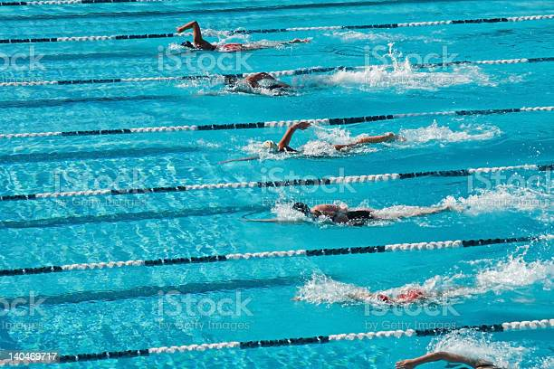

Freestyle is a category of swimming competition, defined by the rules of the International Swimming Federation (FINA), in which competitors are subject to few limited restrictions on their swimming stroke. Freestyle races are the most common of all swimming competitions, with distances beginning with 50 meters and reaching 1500 meters, also known as the mile. The term 'freestyle stroke' is sometimes used as a synonym for 'front crawl', as front crawl is the fastest swimming stroke. It is now the most common stroke used in freestyle competitions.
Freestyle swimming implies the use of legs and arms for competitive swimming, except in the case of the individual medley or medley relay events. The front crawl is most commonly chosen by swimmers, as this provides the greatest speed. During a race, the competitor circles the arms forward in alternation, kicking the feet up and down (flutter kick). Individual freestyle events can also be swum using one of the officially regulated strokes (breaststroke, butterfly, or backstroke). For the freestyle part of medley swimming competitions, however, one cannot use breaststroke, butterfly, or backstroke. Front crawl is based on the Trudgen that was improved by Richmond Cavill from Sydney, Australia. Cavill developed the stroke by observing a young boy from the Solomon Islands, Alick Wickham. Cavill and his brothers spread the Australian crawl to England, New Zealand and America, creating the freestyle used worldwide today. During the Olympic Games, front crawl is swum almost exclusively during freestyle. Some of the few rules state that swimmers must touch the end of the pool during each length and cannot push off the bottom, hang on the wall, or pull on the lane lines during the course of the race. However other than this any form or variation of strokes is considered legal with the race. As with all competitive events, false starts can lead to disqualification of the swimmer.